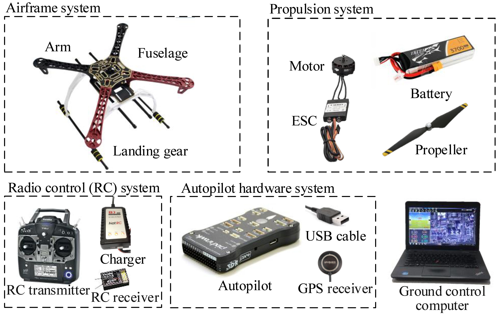

1. Overall Introduction¶
1.1. Hardware Platform¶
Because all control algorithms are eventually deployed in a real aerial vehicle to perform flight tests, a hardware platform must be prepared for the basic flight test requirements. As shown in Fig. 2.1, the experimental hardware platform recommended in this book is composed of five main parts.
Fig. 2.1 Composition of experimental hardware platform
(1) Ground computer : it is a high-performance Personal Computer (PC) with an operating system that performs two main tasks.
1) Providing the software operating environment for the simulation software tools to perform functions such as control algorithm development, SIL simulation, automatic code generation, and HIL simulation;
2) Working as a ground control station in outdoor flight tests to achieve functions such as sensor calibration, parameter tuning, real-time control, and communication.
To ensure all the software tools run smoothly on the ground computer, the following basic configuration requirements must be satisfied.
- Operating System (OS): Windows 7–10, 64-bit system
- Processor: Intel I5 series or above
- Memory: 8G or above
- Graphics: discrete graphics, memory 2G or more
- Storage: 30G available space (solid-state drives are recommended)
- Interface: at least one USB Type-A
- Monitor: screen resolution 1080P or above
Noteworthy, for higher development efficiency, computer performance must be as high as possible.
(2) Autopilot system (also called flight control system) : as the operating platform of control algorithms, it has many sensors and powerful computing processor to estimate flight states and calculate the control signals for the propulsion system to realize the flight control of multicopters. For this book, we selected awidely-used open-source autopilot—Pixhawk as the development and experimental autopilot system. Pixhawk is an independent open-hardware project that aims to provide standard readily-available, high-quality, and low-cost autopilot hardware for education, amateurs, and developers. For different flight mission, performance, and cost requirements, the Pixhawk provides a series of autopilot hardware products that highly promote the development of multicopters.
(3) Radio Control (RC) system : it mainly includes an RC transmitter, an RC receiver, and a battery charger. The RC system is used to send control commands from the pilot on the ground to the autopilot system on the multicopter to realize remote flight control.
(4) Propulsion system : it mainly includes a battery pack and several propellers, Electronic Speed Controllers (ESCs), and motors. The propulsion system is used to receive the Pulse Width Modulation (PWM) control signals from the autopilot system, and control the movement of a multicopter with thrust and torque generated by the rotation of propellers and motors.
(5) Airframe system : it includes a fuselage, landing gear, and several arms. The airframe is used to support the propulsion system and the autopilot system and carry a payload; thus, it is required to have excellent aerodynamic performance and structural strength to ensure that flight missions are successfully and reliably accomplished.
1.2. Software Platform¶
This experimental platform relies on many software tools to realize controller design, code generation, autopilot code compilation, HIL simulation, and other functions. The Simulation Software Package published along with this book has a one-click installation script. Readers can click the script to finish all the installation and configuration process of the required software environment. The MATLAB/Simulink and the Simulation Software Package comprise the software platform, which contains the following.
(1) MATLAB/Simulink : it is a visual simulation tool developed by Mathworks , which is widely-used in aerial vehicles, cars, and other applications. It can be easily applied to develop simulation systems for dynamic system modeling, controller design, hardware and software simulation, and performance analysis through a modular programming language. The simulation software package and source code published along with this book support MATLAB R2017b and above. The required MATLAB toolboxes include the following.
MATLAB/Simulink
Control System Toolbox
Curve Fitting Toolbox
Aerospace Blockset
Aerospace Toolbox
MATLAB Coder
Simulink Coder
Stateflow
Note
This book does not provide the installation package or installation process for MATLAB, so please purchase and install the above-required MATLAB toolboxes by yourself. If conditions are permitted, it is recommended to install MATLAB R2017b version with all toolboxes.
(2) Pixhawk Support Package (PSP) Toolbox3 : it is a Simulink toolbox officially released by Mathworks for controller design, code generation, and firmware upload of the Pixhawk autopilot. We have made some updates and optimizations based on the official PSP toolbox to ensure compatibility with the latest Pixhawk and MATLAB versions.
(3) FlightGear—Flight Simulator : it is a popular open-source flight simulator that can be used to easily observe the flight states of a simulated aerial vehicle in Simulink by receiving flight data from Simulink via a User Datagram Protocol (UDP) interface.
(4) PX4 Software—Source Code : PX4 is an open-source flight control software system that runs on the Pixhawk hardware platform. The Pixhawk hardware + PX4 software constitutes an integrated autopilot system, which is one of the most widely-used autopilot systems for aerial vehicles.
(5) PX4 Toolchain—Compiling Environment : it is used to compile the PX4 source code along with the controller algorithms generated by the PSP toolbox into a “.px4” format firmware file. Then, the firmware file is uploaded into the Pixhawk autopilot hardware (similar to the process of reinstalling an operating system on a PC). The control algorithm generated by the PSP toolbox will automatically run after Pixhawk restarts.
(6) Eclipse C/C++—Integrated Development Environment (IDE): it is used to read and modify the PX4 source code. Eclipse C/C++ is a compact C/C++ IDE with functions similar to those of Microsoft Visual Studio.
(7) QGroundControl (QGC)—Ground Control Station : it is used to perform the pre-flight tasks (e.g., sensor calibration and parameter tuning) for the Pixhawk autopilot before the multicopter takes off. The QGC is also used to receive the flight states and send the control commands of the multicopter through wireless radio telemetry during flight tests.
(8) CopterSim—Real-Time Motion Simulation Software : it is a real-time motion simulation software developed for the Pixhawk/PX4 autopilot system. Readers can configure multicopter models in CopterSim, and connect it to the Pixhawk autopilot via the USB serial port to perform indoor HIL simulations.
(9) 3DDisplay—3D Visual Display Software : it is a real-time 3D visual display software. It receives the flight data of CopterSim through UDP to display the attitude and position of a multicopter in real-time. CopterSim and 3DDisplay together constitute an integrated HIL simulation platform. The distributed independent operation mechanism of CopterSim and 3DDisplay provides future compatibility for swarm simulations.
1.3. Relationship Between Software and Hardware Platforms¶
The previous subsection introduced the hardware and software components of the required experimental platform. These components seem to be diverse and complex, but they are necessary for the development and practical flight experiments of multicopters. Familiarization with these tools can reduce the development difficulty and significantly improved efficiency, which can save a lot of time during the learning process. Figure 2.2 shows the relationships among the various hardware and software components and the overall process of the experimental platform. Most of the software tools play important roles in all the phases of multicopter development. The roles and application methods of the components presented in Fig. 2.2 are introduced in detail in the following sections.
Fig. 2.2 Hardware and software components used in different phases